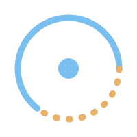
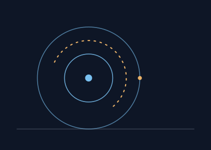

Fact, hypothesis, and what remains to be found
A serious forum, a scientific media platform, a knowledge base, a robotics research branch and a startup scouting structure. Six branches, one rule: we always say where a statement stands.

This site is a demonstration built on the “All-in-One Space Innovation Platform” specification. It shows the structure, the editorial line, and the way every statement will carry its status. It does not yet contain a single article by a named author, a listed startup, or a member.
The six branches
-
Forum
Ten categories, from propulsion to space law, with written rules and a moderation process.
-
Mysteries of the universe
Black holes, dark matter, exoplanets, unexplained signals. This is where the convention matters most.
-
Rockets and launch
Propulsion, reusable launchers, ground infrastructure, orbital mechanics, mission architecture.
-
Space robotics
Rovers, robotic arms, autonomous navigation, teleoperation. At concept and study stage.
-
Startups and investment
Six scouting criteria, written before any application, and a financial branch that remains a concept.
-
Knowledge base
Glossary, timelines, diagrams, learning paths. A durable library rather than a news feed.
Who this site is for
-
Space enthusiasts
Reliable explanations, debate, mission updates.
-
Engineers and researchers
Technical discussion and collaboration.
-
Startups
Visibility, partnerships, access to funding.
-
Investors
Curated opportunities and sector analysis.
-
Students
Guides, career orientation, a community.
-
Institutions
Ecosystem mapping and partnerships.
What this site is today
This is phase 1 of the specification: the brand, the site map, the forum categories and the editorial line.
The forum has no accounts, no posts and no moderators. The categories and the rules are written; the software is not.
No article is signed, because no author has been identified. What is published here describes the state of a question, never a result.
The investment branch is a concept. No fund exists, no application is received, no money is involved.